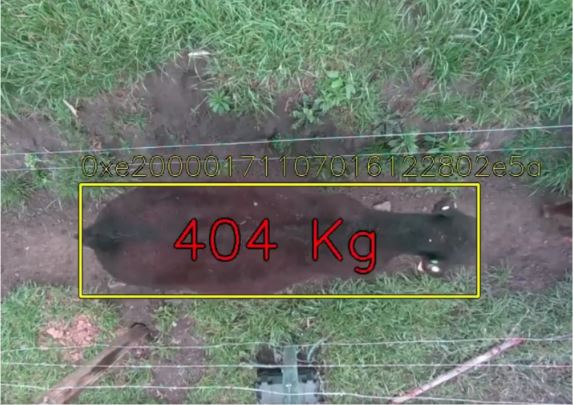

1. Introdução
Este documento visa o entendimento geral do projeto ao definir as necessidades para o desenvolvimento do módulo BoiTech, referindo-se a um sistema que facilita a pesagem de animais bovinos através da integração do aplicativo com o drone de reconhecimento dos animais. As informações aqui presentes são com alto nível de abstração, buscando que a compreensão sobre o sistema seja simples e prática.
1.1 Finalidade
Este documento permitirá uma visão mútua e de simples entendimento a todos os leitores interessados no projeto BoiTech.
1.2 Escopo
Será demonstrado os requisitos necessários para a concepção, produção e implantação do projeto, para que seja entendido por todos os leitores interessados.
1.3 Definições, Acrônimos e Abreviações
Abaixo segue os conceitos para melhor entendimento deste documento:
IFRO - Instituto Federal de Rondônia;
TI - Tecnologia da Informação;
3D - Tridimensional;
2. Referências
WATANABE, André Hiroshi Quadros; MANCHINI, Heloise; MARÇAL, Wilmar Sachetin. Comparação do peso corporal
obtido através de pesagem em balança digital ou fita torácica de pesagem em nelores machos. Pubvet, v.
11, p. 424-537, 2017.
IDARON (RO). IDARON. Volume de exportação de carne bovina de Rondônia aponta para novo recorde em 2022.
In: Volume de exportação de carne bovina de Rondônia aponta para novo recorde em 2022. 1. Porto Velho -
Rondônia, 7 set. 2022. Disponível em:
http://www.idaron.ro.gov.br/index.php/2022/04/07/volume-de-exportacao-de-carne-bovina-de-rondonia-aponta-paEMBRAPA.
CARACTERIZAÇÃO DA PECUÁRIA EM RONDÔNIA.
CARACTERIZAÇÃO DA PECUÁRIA EM RONDÔNIA, [S. l.], n. 1, p. 10-37, 11 jul. 2022. Disponível em:
https://www.alice.cnptia.embrapa.br/bitstream/doc/1136523/1/cpafro-18627.pdf. Acesso em: 30 set.
2022.ra-novo-recorde-em-2022/. Acesso em: 7 abr. 2022.
UFMJ. Cenários para a pecuária: Rondônia. In: Cenários para a pecuária. 1. ed. [S. l.], 11 jul. 2022.
Disponível em: https://csr.ufmg.br/pecuaria/portfolio-item/rondonia/. Acesso em: 30 set. 2022.
CANADIAN JOURNAL OF ANIMAL SCIENCE. Electronic identification: Applications in beef production and
research. Canadian Journal of Animal Science, Canadá, v. 80, n. 3, p. 1, 8 set. 2000. DOI
https://doi.org/10.4141/A99-099. Disponível em:
https://cdnsciencepub.com/doi/abs/10.4141/A99-099#abstract-fr. Acesso em: 30 set. 2022.
GUARDIA, G. IARPJe: Automação de processos no TRF1 para o Auxílio Emergencial, [s. l.], 1 jan. 2022.
3. Visão Geral
Atualmente o processo de pesagem dos animais bovinos na pecuária de corte é feito através do manejo,
onde o animal é conduzido ao curral. Quando o proprietário não possui um local adequado para a pesagem,
é necessário a realocação dos animais para uma propriedade vizinha, gerando custo e possíveis danos aos
animais, caso o proprietário tenha o local apropriado para a pesagem o custo será reduzido, porém a
possibilidade de danos continua pois ainda é necessário fazer a condução do animal, após o manejo até o
curral o animal entra em balanças manuais ou eletrônicas que efetuarão a pesagem, caso o peso seja
adequado o animal é selecionado e ficará separado, caso contrário o animal é devolvido ao pasto. Com os
animais aptos para abate o proprietário começa a fazer contato com os frigoríficos para solicitação de
valores, após a seleção o gado é embarcado e enviado para análise, após o recebimento dos animais caso
haja algum animal irregular para abate, esse animal será devolvido ao proprietário, resultando em mais
danos e custos.
A identificação individual dos animais com a utilização do RFID integrado com o sistema permite que o
usuário tenha controle total dos animais por meio de relatórios, visto que hoje em dia o animal é pesado
e não identificado, sendo impossível analisar a evolução.
4. Posicionamento
4.1 Oportunidade de Negócios
Com o crescimento da pecuária de corte no Brasil e a implementação cada vez mais notória da Ti Verde, torna-se necessária a utilização de equipamentos que facilitem o processo de engorda dos animais. Sendo assim, o BoiTech visa a agilidade e a segurança no processo de pesagem do gado com o objetivo de assegurar que o proprietário tenha o controle de todos os animais inseridos no pasto.
4.2 Descrição do Problema
4.3 Sentença de Posição do Produto
5. Descrições dos Envolvidos e dos Usuários
5.1 Resumo dos Envolvidos
5.2 Resumo dos Usuários
5.3 Perfis dos Envolvidos
5.3.1 Equipe de Desenvolvedores
5.3.2 Equipe de Gestores
6. Alternativas e Concorrência
6.1 Olho do Dono
A tecnologia Olho do Dono tem como objetivo utilizar câmera 3D com auxílio de algoritmos e inteligência artificial para facilitar a pesagem de animais sem a utilização de balanças convencionais, assim reduzindo o estresse do animal.
6.2 Empresa Z-Tecs Zootecnia Inteligente
A empresa Z-Tecs Zootecnia Inteligente utiliza câmera 3D disposta em áreas de passagem, alimentação ou
bebedouro, o sistema coleta imagens dos animais, e por meio da aplicação de algoritmos e inteligência
artificial, a pesagem dos animais é efetuada.
Além disso, por meio de dispositivo do tipo RFID, os animais são identificados, permitindo
assinalar as
informações de pesagem de forma individual.

7. Visão Geral do Produto
7.1 Perspectiva do Produto
O BoiTech irá ajudar toda a pecuária de corte interessada em facilitar o processo de pesagem dos animais. O produto fornecerá ao usuário a possibilidade de gerar relatórios através de um DashBoard totalmente personalizado, para melhor gerenciar os animais cadastrados.
8. Requisitos Funcionais e não Funcionais
Após a fase de levantamento de requisitos, foram identificados e coletados os seguintes requisitos para o software:
8.1 Efetuar Login
8.2 Cadastrar Usuários
8.3 Cadastrar Fazendas
8.4 Cadastrar Lotes
8.5 Cadastrar Animais

8.6 Cadastrar Solicitações
8.7 Consultar Usuários
8.8 Consultar Fazendas
8.9 Consultar Lotes
8.10 Consultar Animais
8.11 Consultar Solicitações
8.12 DashBoard Geral
9. Restrições
10. Requisitos de Qualidade
A ISO nº 9126 determina uma série de requisitos de qualidade de software que um software a ser construído
pode abranger. Esses requisitos de qualidade abrangem aspectos internos do software como linguagens,
códigos, classes, etc. Assim como os aspectos externos do software como a interface da função, botões,
cores, entre outras. A seguir a Figura 01 exemplifica quais são os requisitos de qualidade do software
divididos por áreas.
Figura 01: Requisitos de Qualidade Interna e Externa

Fonte: ISO 9126
A partir da ISO 9126 o produto deverá atender aos seguintes requisitos de qualidade:
11. PostMortem
Com o encerramento da disciplina de Tecnologia da Informação e Meio Ambiente, o documento visa levantar ideias para o desenvolvimento do mesmo.
11.1 Pontos Positivos
11.2 Pontos Negativos
12. Mapa de Telas
13. Apresentação
Identidade Visual
Apresentação